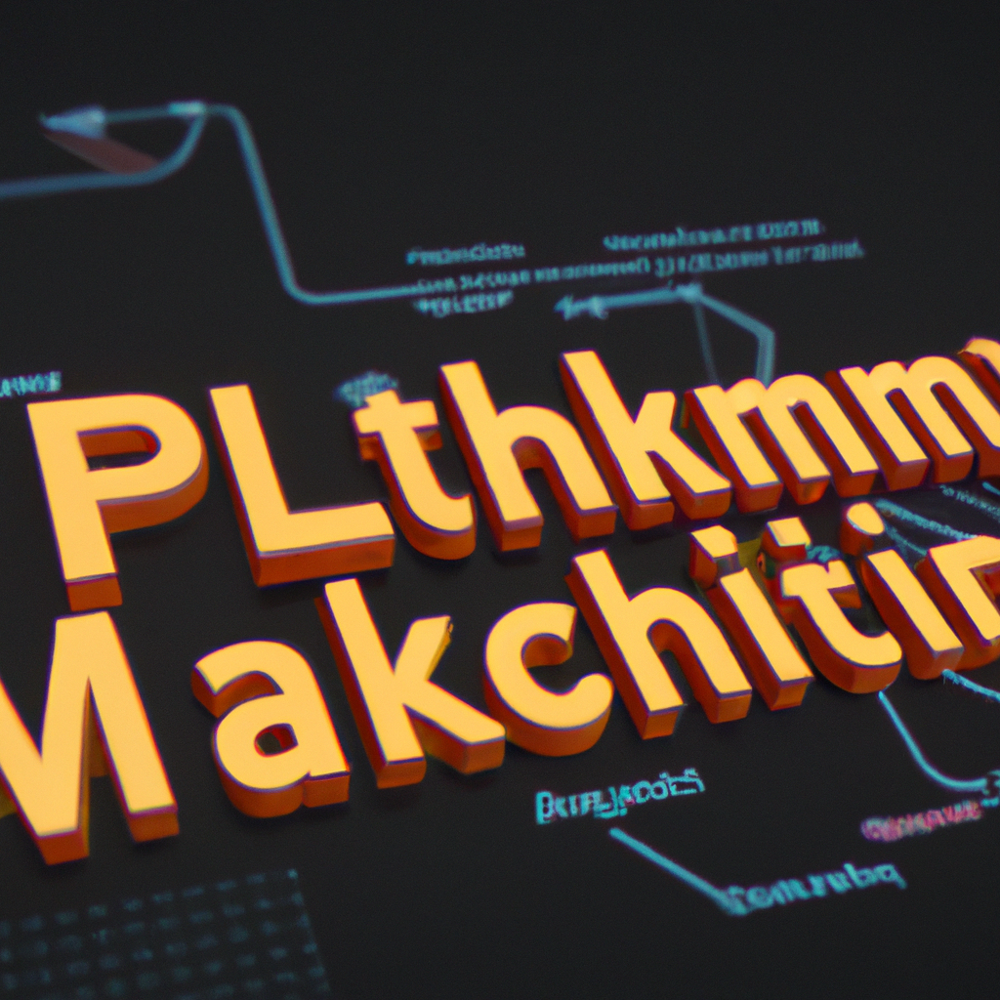

The future of Python and Machine Learning
Python has been gaining popularity in the tech industry for its versatility and ease of use. In recent years, it has also become a powerful tool for developing machine learning algorithms. As advancements in artificial intelligence (AI) continue to accelerate, the demand for Python and machine learning skills is only going to increase.
One area where Python and machine learning are already making a significant impact is in the field of radiology. With the help of AI, radiologists are able to analyze medical images and detect abnormalities with a higher level of accuracy. This not only saves time and resources but also improves patient outcomes.
But what does the future hold for Python and machine learning? With the rapid pace of technological advancement, it's difficult to predict exactly what will happen. However, there are a few key trends that we can expect to see in the coming years.
Firstly, we can expect to see an even greater integration of Python and machine learning in various industries. From healthcare to finance, businesses are realizing the potential of using AI to improve their processes and decision-making. As a result, there will be a growing demand for professionals who are skilled in both Python and machine learning.
Secondly, we can expect to see advancements in the capabilities of machine learning algorithms. As researchers continue to improve upon existing algorithms and develop new ones, we can expect to see a wider range of applications for AI. This will open up new possibilities and opportunities for those working with Python and machine learning.
Lastly, we can expect to see a greater focus on ethics in AI. As machine learning becomes more prevalent in our daily lives, it is crucial that we consider the ethical implications of its use. This includes issues such as bias in algorithms and the potential for AI to replace human jobs. As Python and machine learning continue to evolve, it will be important for professionals to stay informed and actively address these ethical concerns.
In conclusion, the future of Python and machine learning is bright and exciting. As we continue to push the boundaries of what is possible with AI, we can expect to see even more innovative and impactful applications of Python and machine learning. As a Python instructor, I am excited to see where this journey takes us and to continue teaching others about the power and potential of these technologies.